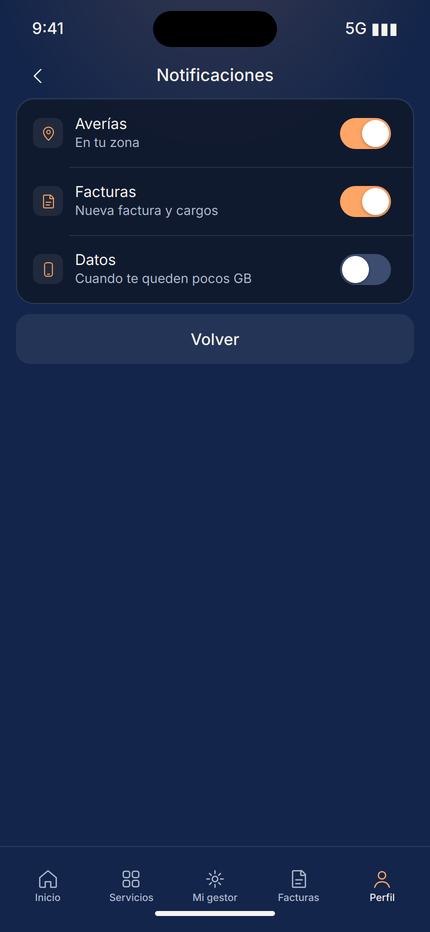
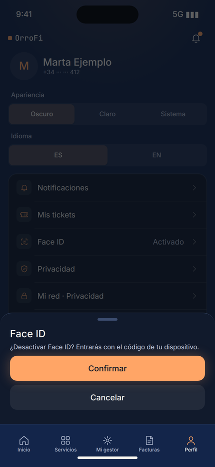
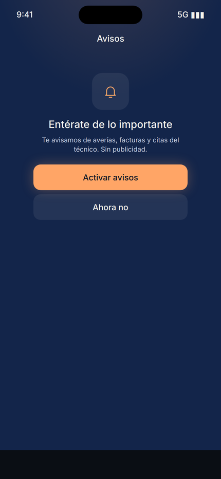

Уведомления (настройки)
Экран notifset · Настройки

Профиль, тема, язык, Face ID и уведомления.
Экран notifset · Настройки

Экран profile · Настройки

Экран sh-faceid · Настройки

Экран sh-logout · Настройки

Экран notif · Уведомления

Экран push-why · Уведомления
